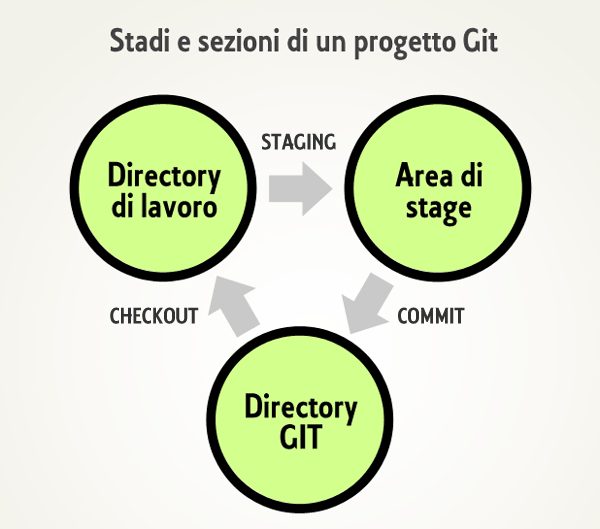

CONTROLLO DI VERSIONE CON GIT
PROGETTO SOFTWARE
- costituito da numerosi files (centinaia, a volte migliaia) che cambiano nel tempo {: .fragment}
- creato, gestito, modificato da uno o spesso molti sviluppatori {: .fragment}
SISTEMA DI VERSIONAMENTO
-
consente di tenere sotto controllo i cambiamenti di un software nel suo complesso e nelle sue parti costitutive {: .fragment}
-
permette di gestire l'accesso al progetto (autenticazione, privilegi, permessi di scrittura) {: .fragment}
GIT
- Creato da Linus Torvalds, lo stesso del kernel Linux {: .fragment}
- Modello
DISTRIBUITO {: .fragment}
- Gestione dei dati a
ISTANTANEA {: .fragment}
DISTRIBUITO
-
Ogni sviluppatore ha una copia locale dell'intero REPOSITORY, che contiene tutti i files del progetto, tutte le modifiche e l'albero delle relazioni {: .fragment}
-
La maggior parte delle operazioni avvengono nella copia locale del repository {: .fragment}
MODELLO A ISTANTANEA
- Genera delle
istantanee (snapshot) di tutti i file in un determinato momento {: .fragment}
- Gli altri sistemi salvano le modifiche ai file (Modello incrementale, o a base delta) {: .fragment}
--
Modello incrementale

--
Modello a istantanea

STATI DI UN FILE
- Modificato: il file ha subito dei cambiamenti, ma non è ancora stato registrato {: .fragment}
- In stage: il file, modificato, viene aggiunto aggiunto allo stage, quindi preparato per essere aggiunto alla prossima istantanea {: .fragment}
- Committato: il file (insieme agli altri presenti nell'area di stage) viene salvato nel repository (database) locale. Viene di fatto salvata una nuova versione (locale) del progetto {: .fragment}
AREE DI UN PROGETTO GIT
- Directory di lavoro (working dir): contiene una determinata versione del progetto (scelta attraverso un checkout), ossia una certa istantanea dei file su cui vogliamo lavorare {: .fragment}
- Directory di git (git dir): database che contiene tutti i dati e i metadati del progetto (storico delle versioni). Di fatto contiene tutti i commit {: .fragment}
- Area di stage (staging area): chiamata Indice (Index), contiene le informazioni relative ai cambiamenti dei file che verranno inviati al database per creare una nuova versione {: .fragment}
--

INSTALLAZIONE
https://git-scm.com/
CONFIGURAZIONE MINIMA
bash
git config --global user.name pippo
git config --global user.email pippo@example.com
git config --global core.editor vim
COMANDI ESSENZIALI
git init: crea un nuovo repository localegit add: aggiunge uno o più files all'area di staginggit commit: salva nella directory .git tutto quello che si trova nell'area di staging, creando di fatto una nuova istantanea (versione) del progettogit status: mostra lo stato dell'area di lavoro
ESERCITAZIONE 1
- Creare un nuovo repository chiamato
esercitazione_1
- Creare un file di testo chiamato
README e scrivere qualcosa al suo interno
- Aggiungere il file all'area di staging
- Eseguire il commit
SVOLGIMENTO
bash
mkdir esercitazione_1
cd esercitazione_1
git init
echo -e "ciao" >> README
git add README
git status
git commit -m "il mio primo commit"
git status
REPOSITORY REMOTI SU GITHUB
- Creare un account su github.com
- Creare un repository su github
- Clonare un repository in locale con
git clone
- Invitare collaboratori
COMANDI PRINCIPALI
git push: invia al repository remoto i commit creati sul repository localegit pull: scarica nel repository locale i nuovi commit presenti sul repository remoto